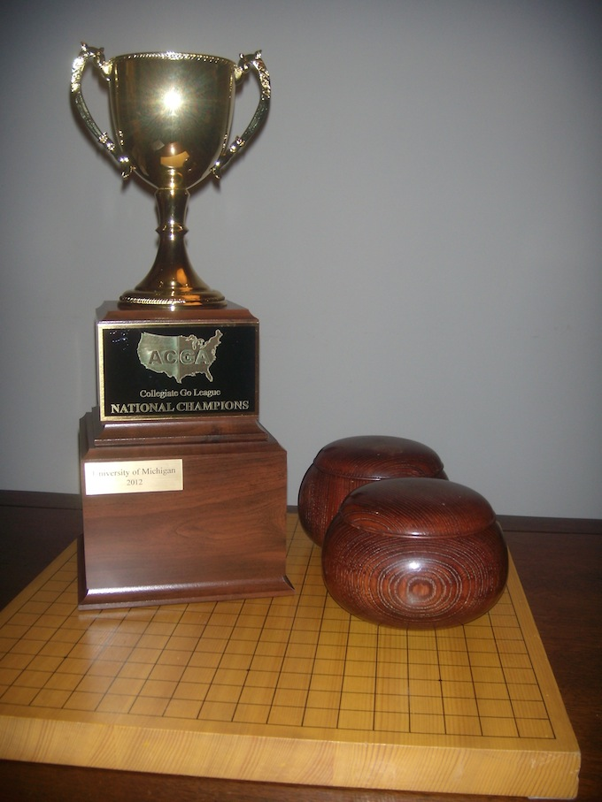

Questions can be directed to {{"cgl.tournament.director@gmail.com"|obfuscate|safe}}
League Format:The CGL features teams of three, competing in matches every other week throughout the school year. Matches are grouped into two splits: fall split (September - November) and spring split (Jan-March). Championship playoffs happen in April.
Teams and Schools: Schools may have up to two teams in the CGL. Each team may consist of 3-5 players (three starters and two substitutes). Rosters may be changed within the first two rounds of both the Fall and Spring splits, but are then locked for the rest of the split.
Eligibility: Players are eligible to compete for a college club if they are current students at that college - undergraduate or graduate.
Match Format: A "match" refers to a set of three games between two teams. Each team will field 3 players. The 3 players from each team will play each other, pairing from strongest to weakest. The match will be won by the team who wins the majority of the 3 boards. If a team does not have 3 players on match day, they will forfeit the missing boards.
Time/Dates: Matches occur every other Saturday, starting at 1PM EST/10AM PST, and usually ending by 3PM EST/noon PST. See the Leaderboard page for a full schedule of matches. Please try to arrive in the tournament room 15 minutes earlier than the match start, to minimize delays. Team captains can contact each other to reschedule a match if so desired; the requesting captain is responsible for ensuring that EITHER 1) the match is rescheduled properly OR 2) letting CGL tournament directors know by Wednesday that the match should be cancelled.
Location: KGS, Room: "Collegiate Go League", under "Tournaments".
Game settings: 30m main time, 5x30second Japanese byo-yomi, Chinese Ruleset with 7.5 points komi, unrated, no undos, and handicap as specified below. A moderator will be on hand to resolve any disputes/conflicts.
Handicap: Games in the CGL shall be played with one stone fewer than the normal handicap, up to a maximum of 5 stones. For example, a 5kyu vs 10kyu match would have a 4 stone handicap, and a 7d vs. 1d match would have a 5 stone handicap. Handicap stones should be placed on the star points.
No-Show: A team with some of its members missing at 1:15 PM Eastern Time will have been considered to have forfeited those boards. Missing more than one person of course means losing the match by default. Please double-check your time zones!
For the team captain: Each school will nominate a team captain, who will maintain a roster of active team members on the CGL website. The team captain will be responsible for making sure that their team shows up on time for each match. The roster should have 3-5 players, and cannot be changed after the second round of each split (fall and spring).
For us, the CGL organizers: ~Two days after a round is complete, we'll set up matchups for the next round. If you have a scheduling conflict that week, your team captain must either coordinate with the opponent's team captain to reschedule, or let us know ASAP that we should cancel that match. Schools who have not played each other previously that season are preferentially matched up. We also try to match schools of similar win/loss history. If there are an odd number of schools, schools with the most forfeited games will be given byes preferentially.
After the match: We will handle uploading game records and updating the standings table. Afterwards, we'll ask you to edit the game records with the names of the players.
Ladder Format: We've created an OGS individual league for the CGL, using OGS's Ladder feature. There's a OGS CGL group you can join and then you can compete in the 19x19 ladder.
To play on OGS's ladder system, you'll need a rated (not provisional) account. That will take about 10 games of play before the system takes away the ?.
Each season culminates in a championship tournament. The top 6 schools, as ranked by wins, then fewest losses, then ties, then fewest forfeited boards, will be invited to the championship tournament. The top 2 schools will be seeded in the semifinals; the next 4 schools will compete for a slot in the semifinals. The championship games, like the normal season games, take place on KGS. All games will be
The championship takes place over 3 weekends in single elimination format, with an additional match between the losers of the semifinals, to determine 3rd place. Seeding will work as follows: [3v6, 4v5] => [1v[4/5]], [2v[3/6]].
The winner of the championship takes home a prize trophy, which they get to keep for a year, and $250 for their club. Second and third place schools get $100 and $50, respectively.
 {% endblock maintext %}